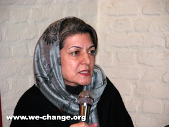

پذيرش > تریبون > مقالات > تجربهاي هشدار دهنده !


 تجربهاي هشدار دهنده ! تجربهاي هشدار دهنده !
1 دی 1385 - خديجه مقدم - نسخه قابل چاپ
ساعت 10 شب پنج شنبه بود، پس از آن نشست دلنشين 23 آذرماه كه اعضاي كمپين را از همه جاي ايران دور هم گرد آورده بود، يكي از اعضاي فعال و جوان كمپين (زينب پيغمبرزاده) تلفن كرد كه ”مرا در مترو، در ايستگاه چيتگر بازداشت كردهاند“. بدون هيچ درنگي با همسرم به محل رفتيم. مسئول ايستگاه كه خانم خوشفكر و متيني بود گفت ”اگر مقاومت نميكرد و 10 دقيقه قطار را در سكو متوقف و معطل نميكرد الان آزاد ميشد اما ديگر از دست من كاري برنميآيد چون اين 10 دقيقه معطلي باعث اختلال در عبور و مرور شده و كار را به شهردار كشانده است“.
آن شب تا ساعت 2 و نيم شب با زينب از اين كلانتري به آن كلانتري رفتيم تا آنكه بالاخره در بخش پليس امنيت منطقه گيشا، زينب را نگه داشتند و بهرغم اصرار من كه پيشاش بمانم، متاسفانه نگذاشتند. او را با 72 جزوه ”تاثير قوانين بر زندگي زنان“ گرفته بودند و من آنجا فكر ميكردم كه اي كاش اين دختر پركار و فعال ما، هشدارهايي را كه در كارگاههاي آموزشي ميدهيم جدي ميگرفت و با تعداد زياد جزوه به جمعآوري امضاء نميپرداخت. از طرفي در اين فكر بودم كه اي كاش ما هم در كارگاههاي آموزشي اين بند را هم اضافه ميكرديم كه در روزهاي حساسي همچون ”شب انتخابات“ جمعآوري امضاء را در مكانهاي عمومي به فراموشي بسپارند چرا كه در چنين روزهايي هميشه كل نيروهاي انتظامي در سراسر كشور آماده باش هستند و اصلا زينب را هم در ابتدا با اين عنوان كه ”در شب انتخابات در حال پخش تبليغ انتخاباتي است“ بازداشت كرده بودند. چرا كه در شب انتخابات هرگونه تبليغات انتخاباتي ممنوع است.
بههرحال توقف 10 دقيقهاي قطار مترو در سكو و بعد هم مصادف شدن آن با شب انتخابات مجموعا باعث شد كه تلاشهاي ما به ثمر ننشيند و زينب نه تنها آن شب بلكه 3 شب ديگر را در بازداشت باقي بماند. جالب آنكه در اين رفت و آمد 4 روزه براي آزادي زينب، من ابتدا به عنوان استاد راهنما و سپس بهعنوان مادري كه او را بزرگ كردهام و بعد از آن به عنوان مطلع پرونده و سرآخر در روز دوشنبه به عنوان متهم با دستبند به دادگاه انقلاب هدايت شدم، هرچند كه اين اتهام آخري بيش از چند ساعت بر من نچسبيد و دستبند را برايشان گذاشتم و زينب را با خود براي پدرش به هديه آوردم. چرا كه من و زينب توانستيم از حق آزادي خود براي جمعآوري امضاء بهمنظور تغيير آنچه كه در سر داريم دفاع كنيم.
ما مطمئن بوديم كه هيچ كار مجرمانه و غيرقانوني نكردهايم و هيچ عمل ضد دولتي و ضداسلامي مرتكب نشدهايم كه مستحق بازداشت باشيم. اين را ما با اطمينان قلبي ميدانستيم اما در اين ميان چند بدشانسي و چند اشتباه كوچك باعث شد كه حقيقت پنهان بماند و آزادي زينب 4 روز بهطول بيانجامد. براي همين در اينجا ميخواهم بر اشتباهات كوچكي تاكيد كنم كه شايد براي آينده براي همهي ما كه در اين كمپين يك ميليون امضاء شب و روز خود را گذاشتهايم تجربهاي باشد.
خلاصه آنكه اين بازداشت درسهايي را براي ما به همراه آورد كه در زير تيتروار سعي ميكنم آنها را بر شمارم:
ـ نخست آنكه از اين به بعد، اگر ماموران انتظامي در هر مكان و محلهاي ما را در حين توزيع كتابچهها يا جمعآوري امضاء مورد پرسش قرار دادند نبايد با آنها بگو مگو كنيم و با لحني پرخاشجويانه برخورد كنيم. چون ما ميدانيم كه كار و حرفهايمان برحق است و بنابراين اين حرفهاي بهحق را ميتوان با صبوري و تحمل و متانت به ماموران نيز منتقل كنيم تا از بروز تنش جلوگيري كنيم.
ـ دوم آنكه در روزها و مناسباتهاي حساس كه نيروهاي انتظامي مجبور هستند براي جلوگيري از بروز خشونت همه چيز را كنترل كنند به جمعآوري امضاء در اماكن عمومي نپردازيم چون اينكار ماموران را به اشتباه مياندازد و براي اينكه اين اشتباه درك شود مدتي طول ميكشد.
ـ سوم آنكه با پنهان كردن اسامي فعالان كمپين، خودمان را مثل زينب به دردسر نيندازيم. اگر زينب به جاي مخفي كردن نام اعضاي كمپين و منبع توزيع كتابچهها، از همان ابتدا خيلي شفاف و با صراحت و اعتمادبهنفس، نامهايي از فعالان كمپين را ميگفت از جمله شيرين عبادي، خديجه مقدم، سيمين بهبهاني، نوشين احمدي خراساني، پروين اردلان، نسرين ستوده، رضوان مقدم، فريده غيرت، شهلا انتصاري، زهره ارزني،... و يا نام نمايندگان و مسئولان سابقي همچون معصومه ابتكار، محتشميپور، الهه كولايي و... كه اين بيانيه را امضاء كردند و نيز آدرس سايت كمپين را ارائه ميكرد ممكن بود بسياري از شك و شبههها در همان ابتدا برطرف گردد.
ما معتقديم كه عمل دسته جمعيمان، كاملا قانوني و در چارچوب مقررات موجود است پس چه لزومي به پنهانكاري و مخفي كردن نام همكارانمان؟ مگر ما كار سياسي ميكنيم يا عمل ضدحكومتي انجام ميدهيم كه بترسيم؟ اصلا چه عمل مجرمانهاي انجام ميدهيم كه بخواهيم پنهان كنيم؟ ما تمام سعيمان اين است كه در روزنامهها و رسانهها همين خواستهاي خود را آشكارا و با نام و فاميلمان بيان كنيم تا شنيده شويم و تغيير ايجاد كنيم، پس چه باك كه اگر مسئول و ماموري از ما بخواهد كه چه ميكنيم؟ آيا نبايد به شفافي توضيح دهيم كه چه ميخواهيم و چرا ميخواهيم؟
ـ اما آخرين تجربهاي كه ميتوان از اين اتفاق بهدست آورد آن است كه در خلال هر فعاليت اجتماعي ـ و صد در صد قانوني ـ مشكلات و مواردي از اين دست پيش ميآيد و بازداشت زينب، نه اولين آن و نه آخرين اين موارد است اما اين اتفاقات كوچك براي پيشبرد اهداف بزرگ و انساني كمپين يك ميليون امضاء، كمترين هزينهاي است كه اعضاء و فعالان، بهطور داوطلبانه خواهند پرداخت. به قول شاعر: كليد گنج عالم، رنج انساني است / آگه شو، دو ره در پيش: يا تسليم، يا...
ارسال به
بالاترین
،
توییتر
،
فریندفید
،
فیسبوک
در همين بخش :
 دهمین دورۀ مراسم تندیس صدیقه دولت آبادی ۱۳۹۲ دهمین دورۀ مراسم تندیس صدیقه دولت آبادی ۱۳۹۲
کارت پستالهایی به بهانهی هشت مارس و به یاد همهی مبارزین راه برابری
بیانیه بیش از 350 تن از مدافعان حقوق زنان به مناسبت روز جهانی زن؛ زنان هر روز فرودستتر میشوند
لباسی که برای تن ما دوخته اند! /اعظم بهرامی
چالشها و چشمانداز فعالیت مدنی زنان
ديگر بخش ها :
طرح یک میلیون امضا
|
مقالات
|
سایت نوشته ها
|
اخبار
|
گزارش كمپين
|
گفت و گو
|
علیه سکوت
|
كوچه به كوچه
|
نامه های شما
|
گزارش ویژه
|
گفتگو با اعضا
|
ویژه سالگرد کمپین
|
تصویر برابری
|
دل آرام علی
|
تریبون
|
مقالات
|
تاریخ شفاهی
|
خارج از چارچوب
|
کتابخانه
|
درباره کمپین
|
کمپین در شهرها
|
کمپین در بند
|
صدای تغییر
|
ویژه 22 خرداد
|
لایحه حمایت از خانواده
|
گالری
|
عشا مومنی
|
امیر یعقوبعلی
|
خدیجه مقدم
|
راحله عسگری زاده و نسیم خسروی
|
پروین اردلان،جلوه جواهری، مریم حسین خواه، ناهید کشاورز
|
زینب پیغمبرزاده
|
سعیده امین، سارا ایمانیان، محبوبه حسین زاده، ناهید کشاورز و همایون نامی
|
احترام شادفر
|
نسیم سرابندی زاده،فاطمه دهدشتی
|
وبلاگ مهمان
|
پرونده خرم آباد
|
دستگیری ها
|
مریم مالک
|
پرستو اللهیاری
|
مهرنوش اعتمادی
|
سمیه رشیدی
|
Other Languages
|
همراهان
|
«فراخوان کمپین ده روز با بهاره هدایت»
| English
|